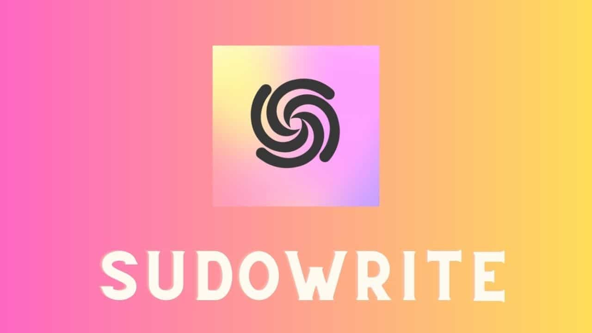

by Sudowrite, Inc. · Specialized Fiction AI
The go-to AI writing partner for novelists, short story authors, and creative writers. Sudowrite is purpose-built for fiction — not blog posts, not marketing copy, just storytelling.
Fiction-first design: Unlike general AI writing tools, Sudowrite was built exclusively for creative fiction. Every feature — from Describe to Story Engine — is designed to help novelists write better, longer stories faster. It is not intended for blog writing, marketing, or SEO content.
Sudowrite was founded in 2020 by Amit Gupta and James Yu, two writers who wanted an AI that truly understood narrative craft. The tool gained traction among indie authors and traditional publishers alike, earning coverage in The New York Times and The Atlantic.
The platform uses powerful LLMs (including GPT-4o and Claude) under the hood but wraps them in a fiction-specific interface: structured writing modes, sensory description tools, and a complete Story Engine that can scaffold an entire novel from a single premise.
In 2025–2026, Sudowrite became the preferred tool for NaNoWriMo participants and professional romance, fantasy, and sci-fi authors — helping writers produce 50,000-word first drafts in days rather than months.
2026 Update: Sudowrite's Story Engine v3 now supports multi-POV (point of view) narratives, automatic timeline tracking, and subplot weaving — significantly reducing plot inconsistencies in long-form fiction.
Story Engine is Sudowrite's most powerful feature: a guided, step-by-step AI workflow that takes you from a single idea to a complete novel outline and first draft. Here's how it works:
Enter your core idea in one sentence. Sudowrite expands it into a full logline.
AI-generated story beats following Save the Cat or Three-Act Structure.
Full character profiles with backstory, motivation, voice, and arc.
AI writes each chapter from your beat sheet, in your chosen style.
Rewrite any passage in a different style, tone, or POV instantly.
Generate vivid sensory descriptions using sight, sound, smell, touch, taste.
Continue your story from where you left off. AI picks up your voice, style, and plot threads for seamless continuation.
Select any passage and rewrite it in a different tone, style, POV, or reading level. Offers multiple variations to choose from.
The beloved "Describe" feature generates rich sensory descriptions — sight, sound, smell, touch, taste — for any scene or object.
Generate natural dialogue between characters, maintaining distinct voices and revealing subtext as skilled authors do.
Produce a structured beat sheet for any genre — romance, mystery, thriller, fantasy — following proven story structures.
Condense long passages or entire chapters into concise summaries. Useful for tracking subplots across a 100,000-word manuscript.
Generate multiple ideas for plot twists, character motivations, setting details, or scene alternatives — presented as clickable options.
AI gives you constructive editorial feedback on pacing, characterization, tension, and prose clarity — like a writing coach in your pocket.
Sudowrite uses a word credit system. Each plan includes a monthly credit allowance; Story Engine and Write mode consume credits.
| Plan | Price | Words/Month | Story Engine | Best For |
|---|---|---|---|---|
| Hobby & Student | $10/mo | 30,000 words | Casual writers, short stories | |
| Professional ⭐ | $22/mo | 90,000 words | Active novelists, NaNoWriMo | |
| Max | $44/mo | 300,000 words | Prolific authors, multiple projects | |
| Free Trial | $0 | ~10,000 words | Limited | Try before buying |
Annual billing reduces cost by ~17%. Word credits reset monthly and do not roll over. The free trial does not require a credit card.
| Feature | Sudowrite | Jasper AI | Writesonic | Claude (Direct) |
|---|---|---|---|---|
| Fiction-specific tools | Dedicated | Generic | Generic | Generic |
| Story Engine | ||||
| Beat Sheet generator | Manual prompt | |||
| Sensory Describe | Dedicated | Manual prompt | ||
| Marketing copy | Not designed for | Excellent | Good | |
| SEO tools | ||||
| Starting price | $10/mo | $39/mo | $16/mo | $20/mo (Claude Pro) |
Sudowrite is the best purpose-built AI tool for fiction writers, and it is not particularly close. If you write novels, short stories, or any form of creative narrative fiction, Sudowrite will genuinely change how you work. The Story Engine alone is worth the subscription price for serious authors.
At $10/mo for the Hobby plan and $22/mo for Professional, Sudowrite is priced competitively for what it offers. The free trial (no credit card) lets you test it fully before committing.
Recommended for: Novelists, short story authors, NaNoWriMo participants, genre fiction writers (romance, fantasy, sci-fi, thriller), aspiring authors building their first draft.
Not recommended for: Bloggers, content marketers, SEO writers, or anyone who primarily writes non-fiction. Those users should look at Jasper AI, Writesonic, or Longshot AI instead.